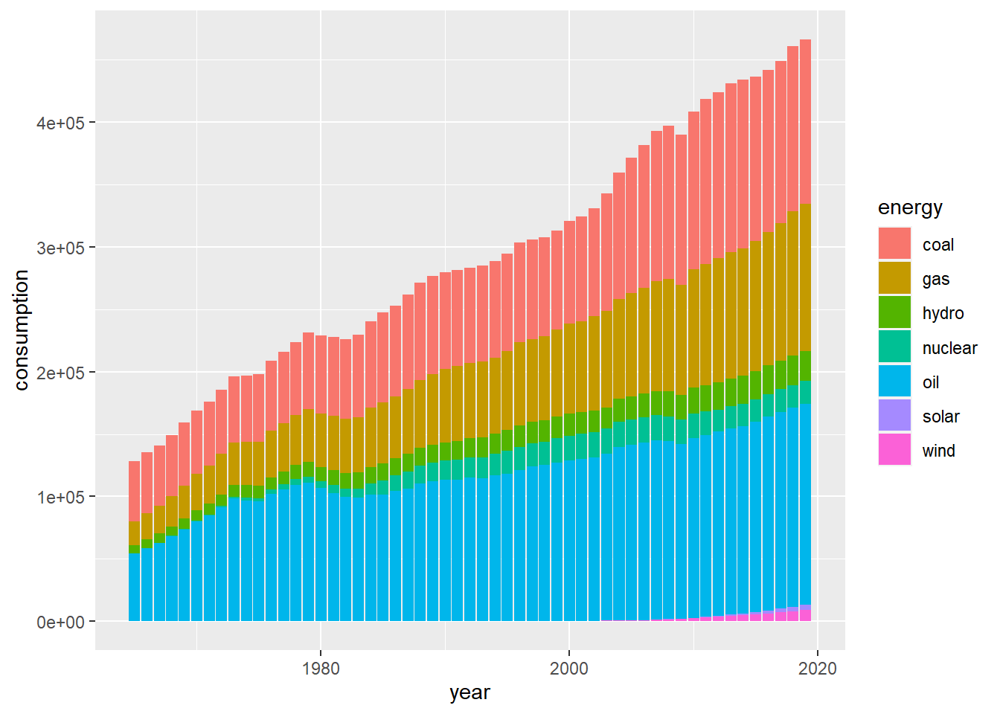
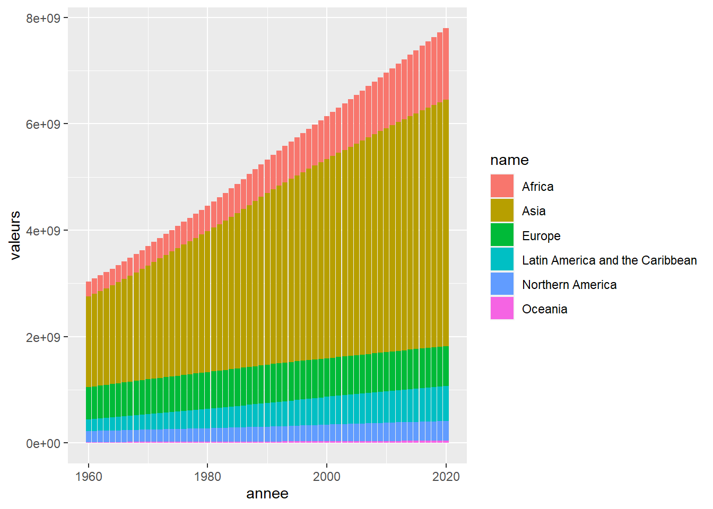

Chapter 3 Vue Continentale
3.1 Chart production par année et par continent
ggplot(production_cont)+
aes(annee,valeurs,fill=Item)+
facet_grid(~region)+
geom_col()## Warning: Removed 27360 rows containing missing values
## (position_stack).
Chart population par année et par continent
ggplot(population_clean_cont)+
aes(annee,valeurs,fill=name)+
geom_col()
3.2 Chart energie matiere
ggplot(energy_cont |> filter(type=="energie"))+
aes(year,consumption,fill=energy)+
facet_grid(~region)+
geom_col()## Warning: Removed 38086 rows containing missing values
## (position_stack).Chart type d’energie
ggplot(energy_cont |> filter(type=="type_energie"))+
aes(year,consumption,fill=energy)+
facet_grid(~region)+
geom_col()## Warning: Removed 27399 rows containing missing values
## (position_stack).